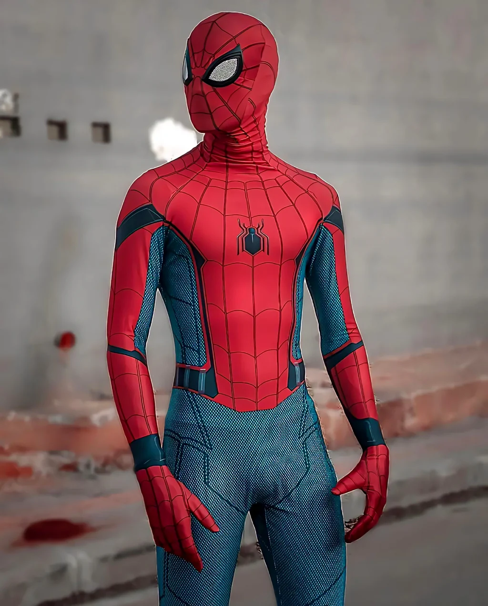
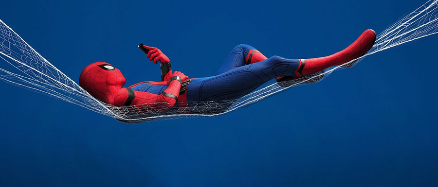

Compartilhando ideias, projetos e aprendizados


Órfão, Peter Parker foi criado pelos seus tios, May e Ben Parker, no Queens, Nova Iorque. Ele ganhou superforça, superagilidade, a capacidade de aderir a paredes e o "sentido-aranha" (um alerta telepático de perigo) após ser picado por uma aranha radioativa. Inicialmente, ele pensou em usar os poderes para benefício próprio, mas após a trágica morte do Tio Ben, ele adotou a filosofia de que "com grandes poderes vêm grandes responsabilidades", tornando-se um combatente do crime.